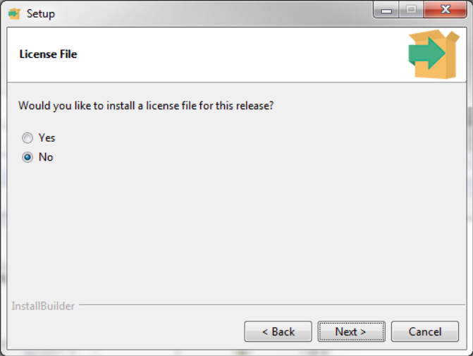
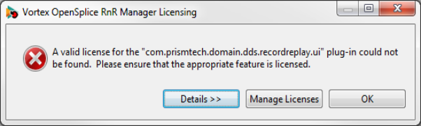

3. Installation¶
3.1. Pre-requisites¶
Vortex OpenSplice RnR Manager requires Oracle Java of at least version 1.6. OpenJDK Java is not supported.
RnR Manager does not need Vortex OpenSplice to be installed on the same system in order to control the RnR service. However, certain features of RnR Manager require a local installation of Vortex OpenSplice in order to operate. This includes connecting to a locally running Vortex OpenSplice domain using Domain URI, or Domain ID, and the storage Import/Export functions.
(Please refer to the Vortex OpenSplice Getting Started Guide for full details of how to install Vortex OpenSplice.)
Other information regarding recent changes to RnR Manager, or known issues are given in the Release Notes included with the distribution.
3.2. Supported Platforms¶
The RnR Manager will run on the Windows and Linux operating systems.
3.3. General Installation Instructions¶
To install the Vortex OpenSplice RnR Manager, start the installer and follow the on-screen instructions.
3.3.1. Installation on Unix and Linux¶


On Unix-based platforms (including Linux), first ensure that execute permission is enabled, then run the installer from the command line:
% VortexOpenSpliceRNRManager-<version>-<platform>-installer.bin
where <version> is the release version number and <platform> is the build for your platform.
3.3.2. Installation on Windows¶

On Windows-based platforms, start the installer by double-clicking on its filename in Windows Explorer:
VortexOpenSpliceRNRManager-<version>-windows-installer.exe
where <version> is the release version number.
3.3.3. Installing the license file¶

- Please refer to the Vortex OpenSplice Getting Started Guide for full details of how Vortex OpenSplice is licensed.
PrismTech supplies a license file for the RnR Manager product. This file is not included in the software distribution.
During the installation, you have the option of specifying the license file.
Installing a License file
{kind=link}
If you did not specify a license file during the installation, you will see a licensing error on startup.
License file error
{kind=link}
Click the Manage Licenses button and then Import License File. Click the button Restart Workbench after importing the license file.

Table Of Contents
Previous topic
Next topic
4. Using the Record and Replay Manager